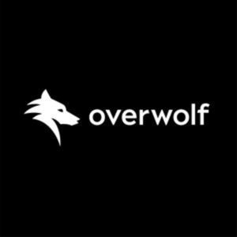

Trade Mark Journal No.2025/014 4 April 2025
WO0000001610181 (9,42)
Office of origin: Israel
Date of International Registration:15 June 2021
Date of designation in the UK:
11 February 2025

- Class 9
- Computer gaming software for developers; computer application software for developing apps and mods; downloadable computer gaming software; computer gaming software for improving user experience; computer gaming software for improving personal customization; computer gaming software for feature adding to video games; interactive video game software; gaming software and social media gaming platforms downloadable or available on the web; computer software that enables the uploading, advertising, presentation, tagging, blogging, sharing or alternatively providing media or electronic information within virtual community spheres, gaming apps or other third-party communication networks.
- Class 42
- Providing temporary use of non-downloadable software via a website for management of personal computer game software and computer game mods; computer technology support services, namely providing technological assistance to in-app developers; providing temporary use of online applications and software tools via a website that enables users to upload and share software tools for use in playing video games and for the creation of video games apps; providing temporary use of non-downloadable software for development of in-game apps; platform as a service (PAAS) featuring computer software tools for online, multiplayer gaming; providing online non-downloadable software and software as a service (SAAS) services, all featuring software for broadcasting, transmitting, receiving, accessing, uploading, downloading, integrating, displaying organizing, storing, transferring and streaming of data, text, games, digital media, images, music, animation and audio; providing temporary use of non downloadable software and software as a service (SAAS) services, featuring software for accessing, browsing and searching online databases, overlaying games and providing in-game statistics; platform as a service (PAAS) providing framework that allows 3rd party developers to easily build gaming apps; computer services, namely, creating an on-line community for registered users to participate in online discussions in the fields of gaming, e-sports and competitions.
OVERWOLF LTD
Representative: Potter Clarkson LLP, Chapel Quarter, Mount Street, Nottingham NG1 6HQ, UNITED KINGDOM